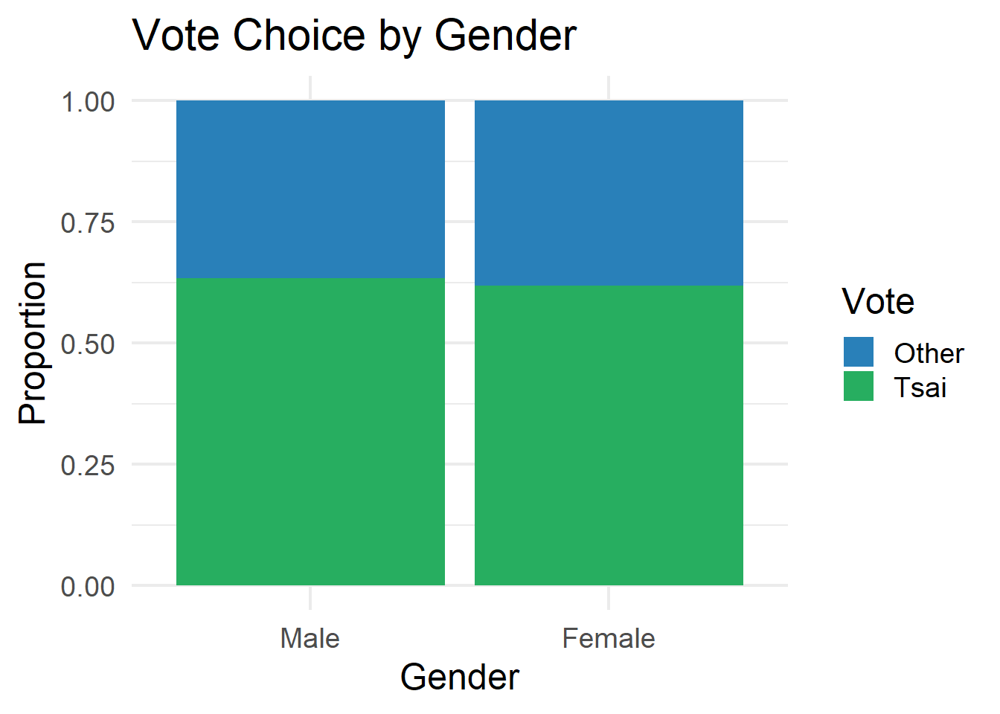
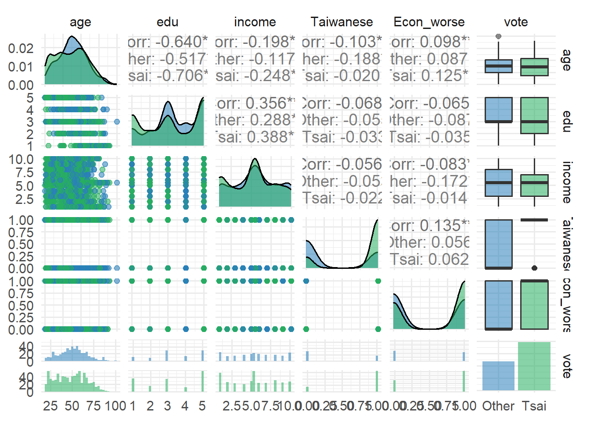
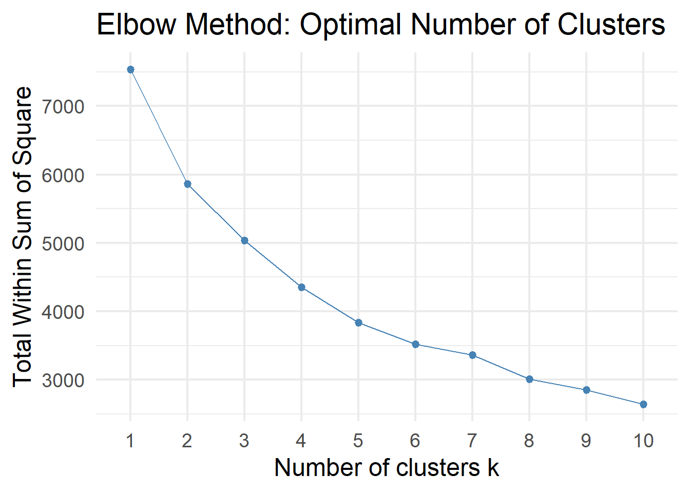
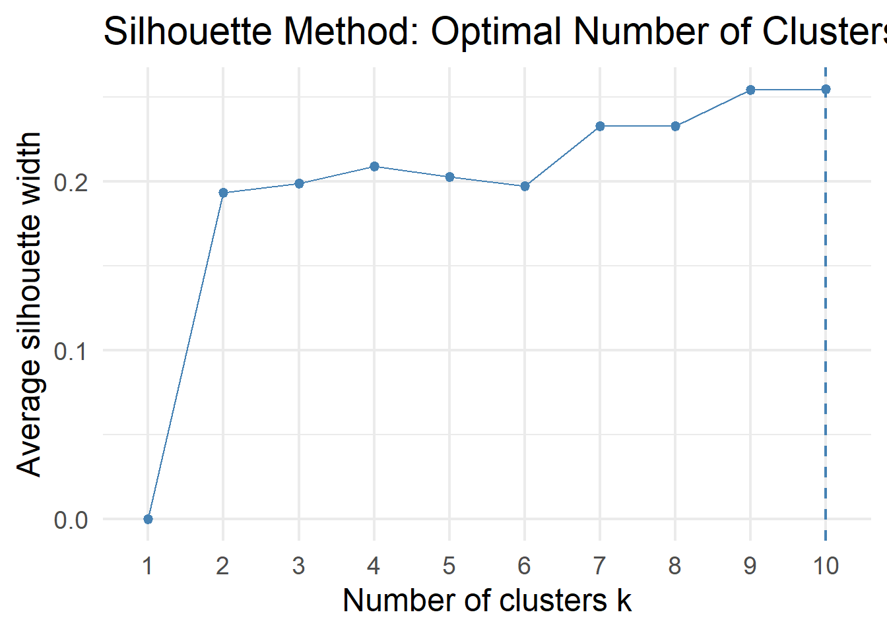
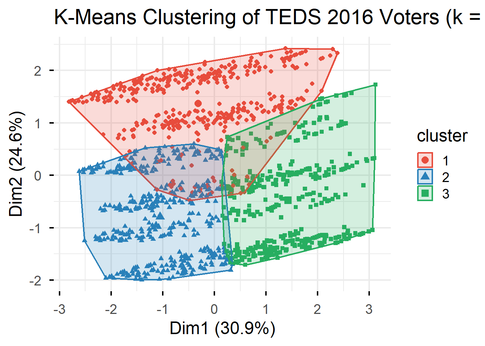
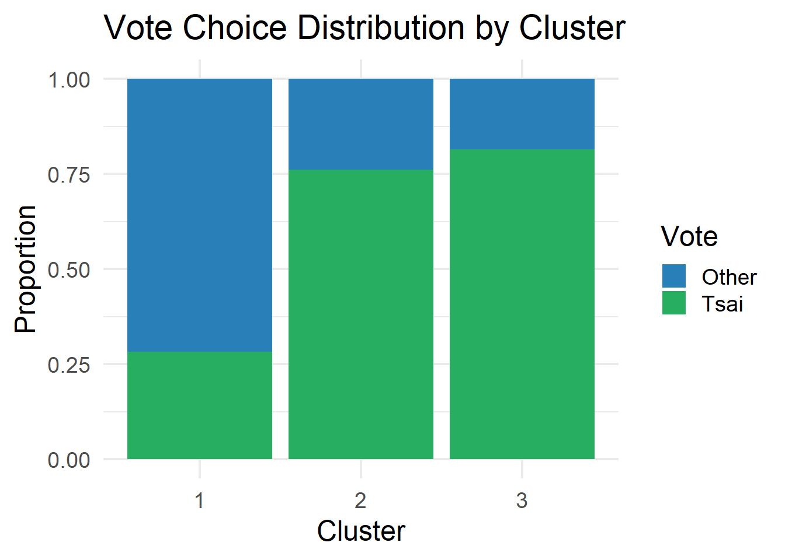
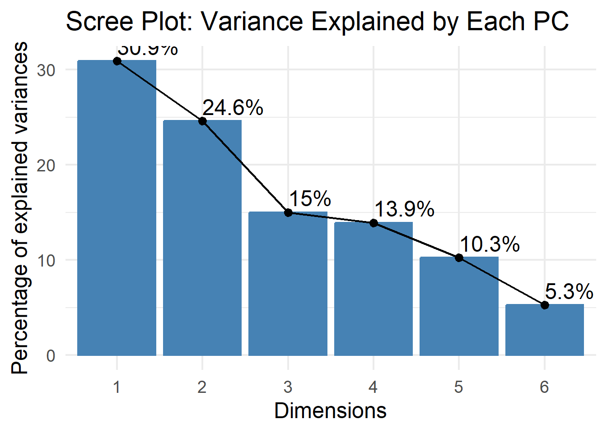
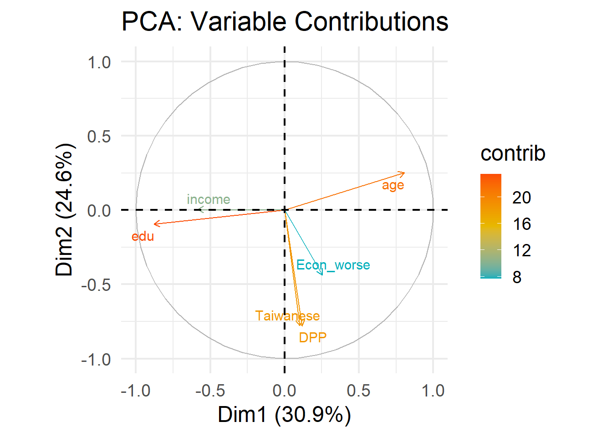
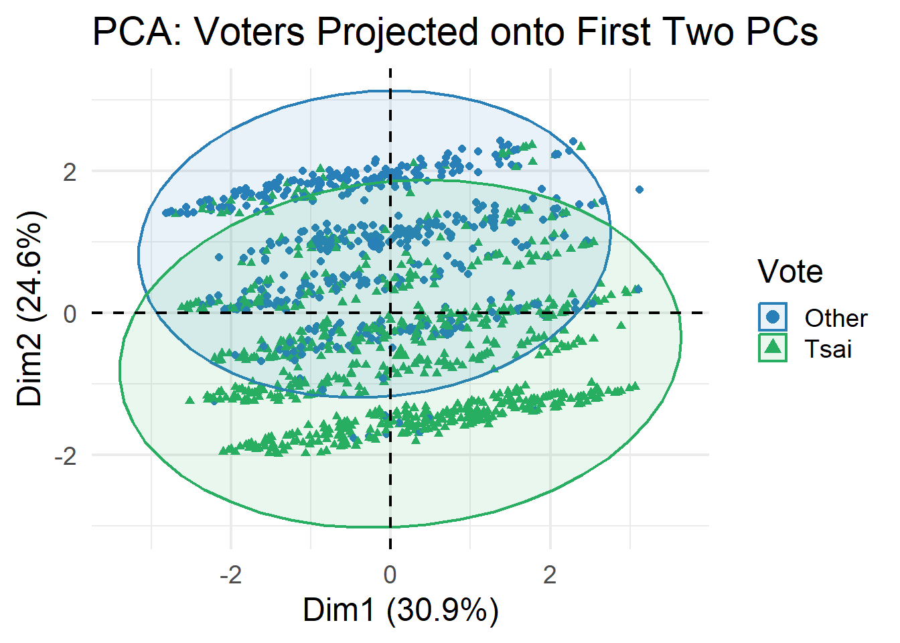
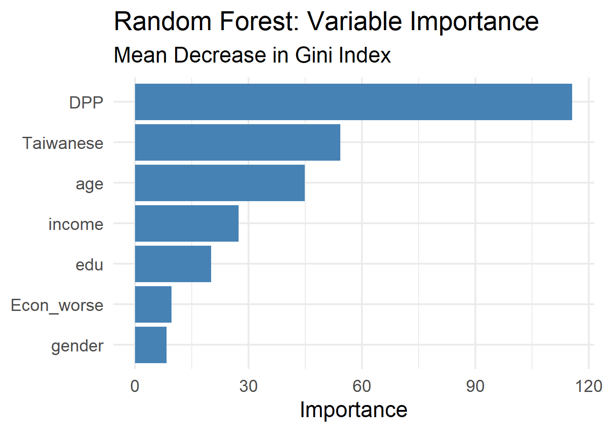

Code
library(haven)
library(tidyverse)
library(GGally)
library(cluster)
library(factoextra)
library(rpart)
library(rpart.plot)
library(randomForest)
library(caret)
library(e1071)
library(pander)library(haven)
library(tidyverse)
library(GGally)
library(cluster)
library(factoextra)
library(rpart)
library(rpart.plot)
library(randomForest)
library(caret)
library(e1071)
library(pander)TEDS_2016 <- read_stata("https://github.com/datageneration/home/blob/master/DataProgramming/data/TEDS_2016.dta?raw=true")dim(TEDS_2016)[1] 1690 54names(TEDS_2016) [1] "District" "Sex" "Age" "Edu"
[5] "Arear" "Career" "Career8" "Ethnic"
[9] "Party" "PartyID" "Tondu" "Tondu3"
[13] "nI2" "votetsai" "green" "votetsai_nm"
[17] "votetsai_all" "Independence" "Unification" "sq"
[21] "Taiwanese" "edu" "female" "whitecollar"
[25] "lowincome" "income" "income_nm" "age"
[29] "KMT" "DPP" "npp" "noparty"
[33] "pfp" "South" "north" "Minnan_father"
[37] "Mainland_father" "Econ_worse" "Inequality" "inequality5"
[41] "econworse5" "Govt_for_public" "pubwelf5" "Govt_dont_care"
[45] "highincome" "votekmt" "votekmt_nm" "Blue"
[49] "Green" "No_Party" "voteblue" "voteblue_nm"
[53] "votedpp_1" "votekmt_1" knitr::kable(matrix(names(TEDS_2016), ncol = 4), caption = "Variable Names in TEDS2016")| District | green | KMT | pubwelf5 |
| Sex | votetsai_nm | DPP | Govt_dont_care |
| Age | votetsai_all | npp | highincome |
| Edu | Independence | noparty | votekmt |
| Arear | Unification | pfp | votekmt_nm |
| Career | sq | South | Blue |
| Career8 | Taiwanese | north | Green |
| Ethnic | edu | Minnan_father | No_Party |
| Party | female | Mainland_father | voteblue |
| PartyID | whitecollar | Econ_worse | voteblue_nm |
| Tondu | lowincome | Inequality | votedpp_1 |
| Tondu3 | income | inequality5 | votekmt_1 |
| nI2 | income_nm | econworse5 | District |
| votetsai | age | Govt_for_public | Sex |
pander(summary(TEDS_2016[, 1:5]))| District | Sex | Age | Edu | Arear |
|---|---|---|---|---|
| Min. : 201 | Min. :1.000 | Min. :1.0 | Min. :1.000 | Min. :1.000 |
| 1st Qu.:1401 | 1st Qu.:1.000 | 1st Qu.:2.0 | 1st Qu.:2.000 | 1st Qu.:1.000 |
| Median :6406 | Median :1.000 | Median :3.0 | Median :3.000 | Median :3.000 |
| Mean :4661 | Mean :1.486 | Mean :3.3 | Mean :3.334 | Mean :2.744 |
| 3rd Qu.:6604 | 3rd Qu.:2.000 | 3rd Qu.:5.0 | 3rd Qu.:5.000 | 3rd Qu.:4.000 |
| Max. :6806 | Max. :2.000 | Max. :5.0 | Max. :9.000 | Max. :6.000 |
TEDS_2016 %>%
summarise(across(everything(), ~sum(is.na(.)))) %>%
pivot_longer(everything(),
names_to = "variable",
values_to = "n_missing") %>%
filter(n_missing > 0) %>%
arrange(desc(n_missing))# A tibble: 10 × 2
variable n_missing
<chr> <int>
1 votetsai 429
2 votetsai_nm 429
3 votekmt_nm 429
4 voteblue_nm 429
5 income_nm 330
6 highincome 330
7 votetsai_all 248
8 votedpp_1 187
9 votekmt_1 187
10 edu 10TEDS_2016 %>%
summarise(across(everything(), ~sum(is.na(.)))) %>%
pivot_longer(everything(),
names_to = "variable",
values_to = "n_missing") %>%
filter(n_missing > 0) %>%
ggplot(aes(x = reorder(variable, n_missing), y = n_missing)) +
geom_col(fill = "steelblue") +
coord_flip() +
labs(title = "Missing Values by Variable",
x = NULL, y = "Count of Missing Values") +
theme_minimal(base_size = 18)
teds <- TEDS_2016 %>%
mutate(
vote = factor(votetsai,
levels = c(0, 1),
labels = c("Other", "Tsai")),
gender = factor(female,
levels = c(0, 1),
labels = c("Male", "Female")),
Tondu = as.factor(Tondu),
Party = as.factor(Party)
) %>%
dplyr::select(vote, gender, age, edu, income,
Taiwanese, Econ_worse, Tondu, Party, DPP) %>%
drop_na()
glimpse(teds)Rows: 1,257
Columns: 10
$ vote <fct> Tsai, Other, Tsai, Tsai, Tsai, Tsai, Tsai, Tsai, Other, Oth…
$ gender <fct> Female, Male, Female, Male, Female, Female, Male, Female, F…
$ age <dbl> 39, 63, 64, 75, 54, 64, 66, 25, 41, 57, 83, 43, 44, 34, 28,…
$ edu <dbl> 5, 5, 2, 1, 5, 1, 1, 2, 5, 5, 1, 5, 5, 3, 3, 3, 3, 1, 5, 3,…
$ income <dbl> 7.0, 8.0, 9.0, 1.0, 10.0, 2.0, 3.0, 5.5, 9.0, 1.0, 5.5, 5.0…
$ Taiwanese <dbl> 0, 0, 1, 0, 1, 1, 1, 1, 1, 0, 0, 1, 1, 1, 0, 0, 0, 0, 0, 1,…
$ Econ_worse <dbl> 0, 1, 1, 1, 1, 1, 1, 0, 0, 1, 0, 1, 1, 0, 0, 0, 1, 0, 1, 0,…
$ Tondu <fct> 5, 3, 4, 9, 6, 9, 5, 5, 5, 4, 9, 3, 5, 3, 3, 4, 1, 1, 4, 3,…
$ Party <fct> 25, 3, 6, 25, 24, 25, 6, 5, 3, 3, 25, 23, 7, 3, 25, 2, 10, …
$ DPP <dbl> 0, 0, 1, 0, 0, 0, 1, 1, 0, 0, 0, 0, 1, 0, 0, 0, 0, 0, 0, 1,…teds %>%
map_df(~ data.frame(
Class = class(.x)[1],
Sample_Values = paste(head(as.character(.x), 3), collapse = ", ")
), .id = "Variable") %>%
knitr::kable(caption = "Table 1: Data Dictionary and Variable Structure (teds)")| Variable | Class | Sample_Values |
|---|---|---|
| vote | factor | Tsai, Other, Tsai |
| gender | factor | Female, Male, Female |
| age | numeric | 39, 63, 64 |
| edu | numeric | 5, 5, 2 |
| income | numeric | 7, 8, 9 |
| Taiwanese | numeric | 0, 0, 1 |
| Econ_worse | numeric | 0, 1, 1 |
| Tondu | factor | 5, 3, 4 |
| Party | factor | 25, 3, 6 |
| DPP | numeric | 0, 0, 1 |
ggplot(teds, aes(x = vote, fill = vote)) +
geom_bar() +
scale_fill_manual(values = c("Other" = "#2980b9", "Tsai" = "#27ae60")) +
labs(title = "Vote Choice Distribution",
subtitle = "TEDS 2016: Tsai Ing-wen vs. Other Candidates",
x = "Vote Choice", y = "Count") +
theme_minimal(base_size = 18) +
theme(legend.position = "none")
ggplot(teds, aes(x = age)) +
geom_histogram(binwidth = 5, fill = "steelblue", color = "white") +
labs(title = "Age Distribution of Respondents",
x = "Age", y = "Count") +
theme_minimal(base_size = 18)
ggplot(teds, aes(x = gender, fill = vote)) +
geom_bar(position = "fill") +
scale_fill_manual(values = c("Other" = "#2980b9", "Tsai" = "#27ae60")) +
labs(title = "Vote Choice by Gender",
x = "Gender", y = "Proportion",
fill = "Vote") +
theme_minimal(base_size = 18)
ggplot(teds, aes(x = vote, y = age, fill = vote)) +
geom_boxplot() +
scale_fill_manual(values = c("Other" = "#2980b9", "Tsai" = "#27ae60")) +
labs(title = "Age Distribution by Vote Choice",
x = "Vote Choice", y = "Age") +
theme_minimal(base_size = 18) +
theme(legend.position = "none")
teds %>%
dplyr::select(age, edu, income, Taiwanese, Econ_worse, DPP) %>%
cor(use = "complete.obs") %>%
as.data.frame() %>%
rownames_to_column("var1") %>%
pivot_longer(-var1, names_to = "var2", values_to = "cor") %>%
ggplot(aes(x = var1, y = var2, fill = cor)) +
geom_tile() +
geom_text(aes(label = round(cor, 2)), size = 6) +
scale_fill_gradient2(low = "#e74c3c", mid = "white", high = "#2980b9",
midpoint = 0, limits = c(-1, 1)) +
labs(title = "Correlation Matrix of Numeric Variables",
x = NULL, y = NULL) +
theme_minimal(base_size = 18) +
theme(axis.text.x = element_text(angle = 45, hjust = 1))
teds %>%
dplyr::select(age, edu, income, Taiwanese, Econ_worse, vote) %>%
ggpairs(aes(color = vote, alpha = 0.5),
upper = list(continuous = "cor"),
lower = list(continuous = "points")) +
scale_color_manual(values = c("Other" = "#2980b9", "Tsai" = "#27ae60")) +
scale_fill_manual(values = c("Other" = "#2980b9", "Tsai" = "#27ae60")) +
theme_minimal(base_size = 14)
teds_numeric <- teds %>%
dplyr::select(age, edu, income, Taiwanese, Econ_worse, DPP) %>%
scale() %>%
as.data.frame()
head(teds_numeric) age edu income Taiwanese Econ_worse DPP
1 -0.6442434 1.1180557 0.5890616 -1.352636 -1.1612317 -0.8507077
2 0.7997042 1.1180557 0.9453043 -1.352636 0.8604695 -0.8507077
3 0.8598687 -0.8791912 1.3015470 0.738709 0.8604695 1.1745567
4 1.5216780 -1.5449401 -1.5483945 -1.352636 0.8604695 -0.8507077
5 0.2582239 1.1180557 1.6577897 0.738709 0.8604695 -0.8507077
6 0.8598687 -1.5449401 -1.1921518 0.738709 0.8604695 -0.8507077fviz_nbclust(teds_numeric, kmeans, method = "wss", k.max = 10) +
labs(title = "Elbow Method: Optimal Number of Clusters") +
theme_minimal(base_size = 18)
fviz_nbclust(teds_numeric, kmeans, method = "silhouette", k.max = 10) +
labs(title = "Silhouette Method: Optimal Number of Clusters") +
theme_minimal(base_size = 18)
set.seed(6323)
km_result <- kmeans(teds_numeric, centers = 3, nstart = 25)
table(km_result$cluster)
1 2 3
400 442 415 round(km_result$centers, 2) age edu income Taiwanese Econ_worse DPP
1 0.11 0.17 0.15 -1.35 -0.26 -0.62
2 -0.80 0.75 0.37 0.69 -0.05 0.24
3 0.74 -0.96 -0.54 0.57 0.31 0.35fviz_cluster(km_result, data = teds_numeric,
geom = "point",
ellipse.type = "convex",
palette = c("#e74c3c", "#2980b9", "#27ae60"),
ggtheme = theme_minimal(base_size = 18)) +
labs(title = "K-Means Clustering of TEDS 2016 Voters (k = 3)")
teds$cluster <- as.factor(km_result$cluster)
teds %>%
group_by(cluster) %>%
summarise(
n = n(),
mean_age = round(mean(age), 1),
mean_edu = round(mean(edu), 1),
mean_income = round(mean(income), 1),
pct_Taiwanese = round(mean(Taiwanese) * 100, 1),
pct_Econ_worse = round(mean(Econ_worse) * 100, 1),
mean_DPP = round(mean(DPP), 2),
pct_Tsai = round(mean(vote == "Tsai") * 100, 1)
)# A tibble: 3 × 9
cluster n mean_age mean_edu mean_income pct_Taiwanese pct_Econ_worse
<fct> <int> <dbl> <dbl> <dbl> <dbl> <dbl>
1 1 400 51.6 3.6 5.8 0 44.5
2 2 442 36.4 4.4 6.4 97.5 54.8
3 3 415 62 1.9 3.8 92 72.8
# ℹ 2 more variables: mean_DPP <dbl>, pct_Tsai <dbl>ggplot(teds, aes(x = cluster, fill = vote)) +
geom_bar(position = "fill") +
scale_fill_manual(values = c("Other" = "#2980b9", "Tsai" = "#27ae60")) +
labs(title = "Vote Choice Distribution by Cluster",
x = "Cluster", y = "Proportion",
fill = "Vote") +
theme_minimal(base_size = 18)
pca_result <- prcomp(teds_numeric, scale. = TRUE)
summary(pca_result)Importance of components:
PC1 PC2 PC3 PC4 PC5 PC6
Standard deviation 1.3621 1.2153 0.9492 0.9141 0.7843 0.5623
Proportion of Variance 0.3092 0.2461 0.1502 0.1393 0.1025 0.0527
Cumulative Proportion 0.3092 0.5554 0.7055 0.8448 0.9473 1.0000fviz_eig(pca_result, addlabels = TRUE) +
labs(title = "Scree Plot: Variance Explained by Each PC") +
theme_minimal(base_size = 18)
fviz_pca_var(pca_result,
col.var = "contrib",
gradient.cols = c("#00AFBB", "#E7B800", "#FC4E07"),
repel = TRUE) +
labs(title = "PCA: Variable Contributions") +
theme_minimal(base_size = 18)
fviz_pca_ind(pca_result,
geom = "point",
col.ind = teds$vote,
palette = c("#2980b9", "#27ae60"),
addEllipses = TRUE,
legend.title = "Vote") +
labs(title = "PCA: Voters Projected onto First Two PCs") +
theme_minimal(base_size = 18)
set.seed(6323)
train_index <- createDataPartition(teds$vote, p = 0.7, list = FALSE)
train_data <- teds[train_index, ] %>% dplyr::select(-cluster)
test_data <- teds[-train_index, ] %>% dplyr::select(-cluster)
cat("Training set:", nrow(train_data), "observations\n")Training set: 880 observationscat("Test set:", nrow(test_data), "observations\n")Test set: 377 observationsprop.table(table(train_data$vote))
Other Tsai
0.3738636 0.6261364 logit_model <- glm(vote ~ age + gender + edu + income +
Taiwanese + Econ_worse + DPP,
data = train_data,
family = binomial)
summary(logit_model)
Call:
glm(formula = vote ~ age + gender + edu + income + Taiwanese +
Econ_worse + DPP, family = binomial, data = train_data)
Coefficients:
Estimate Std. Error z value Pr(>|z|)
(Intercept) 0.361867 0.642494 0.563 0.57328
age -0.016301 0.007529 -2.165 0.03038 *
genderFemale -0.349449 0.198576 -1.760 0.07845 .
edu -0.236898 0.089984 -2.633 0.00847 **
income -0.017889 0.036531 -0.490 0.62435
Taiwanese 1.483033 0.200581 7.394 1.43e-13 ***
Econ_worse 0.340277 0.193553 1.758 0.07874 .
DPP 3.620753 0.315087 11.491 < 2e-16 ***
---
Signif. codes: 0 '***' 0.001 '**' 0.01 '*' 0.05 '.' 0.1 ' ' 1
(Dispersion parameter for binomial family taken to be 1)
Null deviance: 1163.32 on 879 degrees of freedom
Residual deviance: 682.87 on 872 degrees of freedom
AIC: 698.87
Number of Fisher Scoring iterations: 6logit_probs <- predict(logit_model, newdata = test_data, type = "response")
logit_pred <- ifelse(logit_probs > 0.5, "Tsai", "Other")
logit_pred <- factor(logit_pred, levels = c("Other", "Tsai"))
confusionMatrix(logit_pred, test_data$vote)Confusion Matrix and Statistics
Reference
Prediction Other Tsai
Other 104 40
Tsai 37 196
Accuracy : 0.7958
95% CI : (0.7515, 0.8353)
No Information Rate : 0.626
P-Value [Acc > NIR] : 8.186e-13
Kappa : 0.5657
Mcnemar's Test P-Value : 0.8197
Sensitivity : 0.7376
Specificity : 0.8305
Pos Pred Value : 0.7222
Neg Pred Value : 0.8412
Prevalence : 0.3740
Detection Rate : 0.2759
Detection Prevalence : 0.3820
Balanced Accuracy : 0.7840
'Positive' Class : Other
tree_model <- rpart(vote ~ age + gender + edu + income +
Taiwanese + Econ_worse + DPP,
data = train_data,
method = "class")
rpart.plot(tree_model,
type = 4,
extra = 104,
main = "Decision Tree: Predicting Vote Choice",
box.palette = "BuGn",
cex = 1.2)
tree_pred <- predict(tree_model, newdata = test_data, type = "class")
confusionMatrix(tree_pred, test_data$vote)Confusion Matrix and Statistics
Reference
Prediction Other Tsai
Other 118 54
Tsai 23 182
Accuracy : 0.7958
95% CI : (0.7515, 0.8353)
No Information Rate : 0.626
P-Value [Acc > NIR] : 8.186e-13
Kappa : 0.5823
Mcnemar's Test P-Value : 0.0006289
Sensitivity : 0.8369
Specificity : 0.7712
Pos Pred Value : 0.6860
Neg Pred Value : 0.8878
Prevalence : 0.3740
Detection Rate : 0.3130
Detection Prevalence : 0.4562
Balanced Accuracy : 0.8040
'Positive' Class : Other
set.seed(6323)
rf_model <- randomForest(vote ~ age + gender + edu + income +
Taiwanese + Econ_worse + DPP,
data = train_data,
ntree = 500,
importance = TRUE)
print(rf_model)
Call:
randomForest(formula = vote ~ age + gender + edu + income + Taiwanese + Econ_worse + DPP, data = train_data, ntree = 500, importance = TRUE)
Type of random forest: classification
Number of trees: 500
No. of variables tried at each split: 2
OOB estimate of error rate: 19.77%
Confusion matrix:
Other Tsai class.error
Other 245 84 0.2553191
Tsai 90 461 0.1633394rf_pred <- predict(rf_model, newdata = test_data)
confusionMatrix(rf_pred, test_data$vote)Confusion Matrix and Statistics
Reference
Prediction Other Tsai
Other 111 40
Tsai 30 196
Accuracy : 0.8143
95% CI : (0.7713, 0.8523)
No Information Rate : 0.626
P-Value [Acc > NIR] : 1.408e-15
Kappa : 0.609
Mcnemar's Test P-Value : 0.2821
Sensitivity : 0.7872
Specificity : 0.8305
Pos Pred Value : 0.7351
Neg Pred Value : 0.8673
Prevalence : 0.3740
Detection Rate : 0.2944
Detection Prevalence : 0.4005
Balanced Accuracy : 0.8089
'Positive' Class : Other
importance_df <- as.data.frame(importance(rf_model)) %>%
rownames_to_column("variable") %>%
arrange(desc(MeanDecreaseGini))
ggplot(importance_df, aes(x = reorder(variable, MeanDecreaseGini),
y = MeanDecreaseGini)) +
geom_col(fill = "steelblue") +
coord_flip() +
labs(title = "Random Forest: Variable Importance",
subtitle = "Mean Decrease in Gini Index",
x = NULL, y = "Importance") +
theme_minimal(base_size = 18)
results <- tibble(
Model = c("Logistic Regression", "Decision Tree", "Random Forest"),
Accuracy = c(
confusionMatrix(logit_pred, test_data$vote)$overall["Accuracy"],
confusionMatrix(tree_pred, test_data$vote)$overall["Accuracy"],
confusionMatrix(rf_pred, test_data$vote)$overall["Accuracy"]
)
)
results %>% arrange(desc(Accuracy))# A tibble: 3 × 2
Model Accuracy
<chr> <dbl>
1 Random Forest 0.814
2 Logistic Regression 0.796
3 Decision Tree 0.796ggplot(results, aes(x = reorder(Model, Accuracy), y = Accuracy, fill = Model)) +
geom_col(width = 0.6) +
geom_text(aes(label = paste0(round(Accuracy * 100, 1), "%")),
hjust = -0.1, size = 7) +
coord_flip() +
scale_fill_manual(values = c("#e74c3c", "#2980b9", "#27ae60")) +
scale_y_continuous(limits = c(0, 1), labels = scales::percent) +
labs(title = "Model Comparison: Prediction Accuracy",
x = NULL, y = "Accuracy") +
theme_minimal(base_size = 18) +
theme(legend.position = "none")